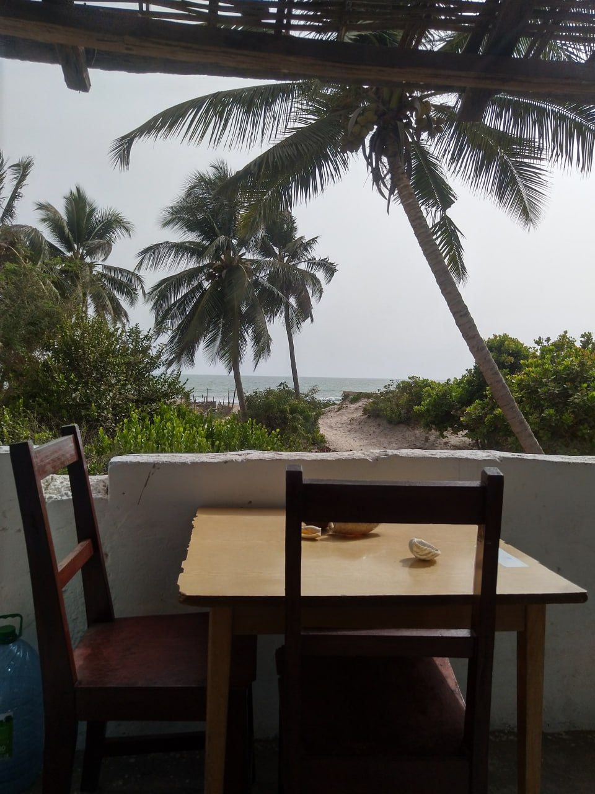
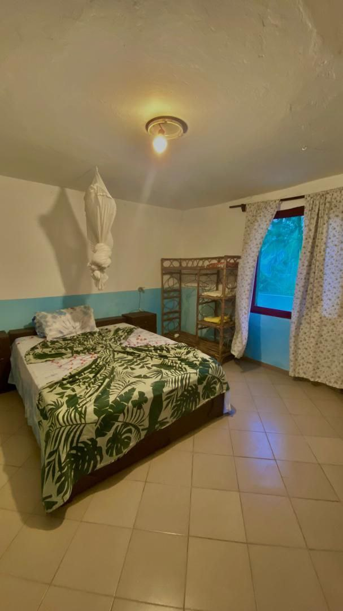
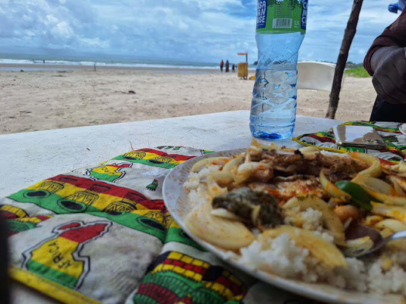
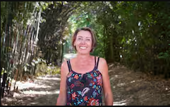
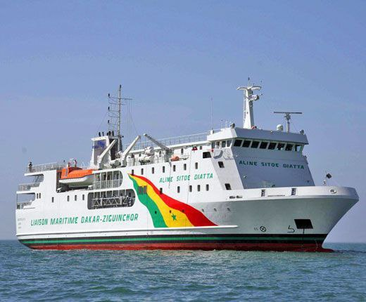
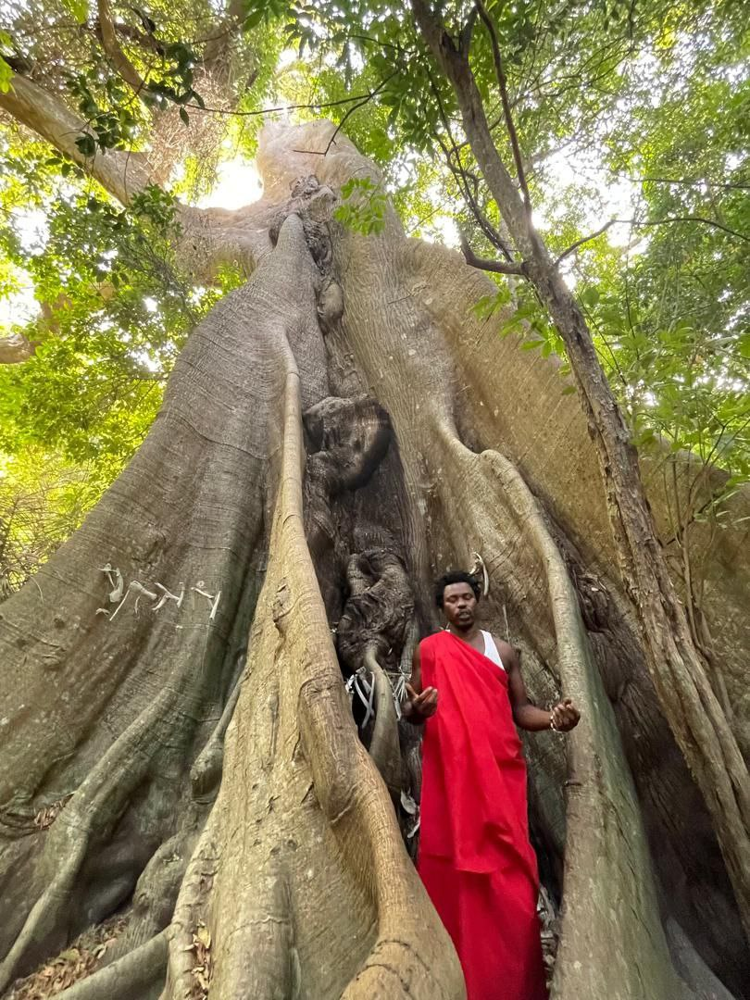

★★★★★
« Super séjour ! L'hôtel est super, le personnel super sympa et serviable. Les chambres sont propres, bien équipées et spacieuses, avec vue sur mer et balcon. »
EllieVoyageuse allemande
L'authenticité Diola face à l'océan Atlantique.
Réveillez-vous au son des vagues.
Au cœur du secteur Cap Randoulene, le Campement Buhanor est un havre de paix où l'architecture Diola traditionnelle — bâtisses en argile, piliers sculptés, toits de chaume — dialogue avec des bâtiments contemporains ouverts sur la mer. Un lieu idéal pour se ressourcer et partager la convivialité casamançaise.

Construites dans le respect du savoir-faire Diola, nos chambres ventilées allient confort simple et charme authentique. Depuis votre balcon privatif, laissez le spectacle de l'océan rythmer vos journées.

Sur notre terrasse face à la plage, savourez nos jus pressés minute : bissap profond, baobab velouté, passion acidulé. Le soir, notre restaurant célèbre la cuisine casamançaise, entre poisson frais et produits du marché.

« Super séjour ! L'hôtel est super, le personnel super sympa et serviable. Les chambres sont propres, bien équipées et spacieuses, avec vue sur mer et balcon. »
« Très bon accueil de Seni qui est venu me chercher à l'aéroport. Le plus : le balcon privé pour un réveil face à la mer, magnifique ! »

« La vue sur mer est à couper le souffle. Chaque matin, je me réveillais au son apaisant des vagues. Comme dans un film, coucher de soleil magnifique. »
Deux pas du campement, une multitude d'expériences vous attendent : nature préservée, culture Diola vivante et paysages aquatiques uniques.

Naviguez en pirogue dans les canaux de mangrove, entre oiseaux et paysages préservés.

Escapade vers ce joyau historique de la Basse Casamance, accessible uniquement par la mer.

Rencontrez les artisans, visitez l'écomusée de Boucotte et partagez la vie locale.

Explorez les pistes côtières et bolongs en kayak ou à vélo, guidés par des locaux passionnés.
Contactez directement Seni, votre hôte, pour organiser votre séjour : réponse rapide garantie, navette aéroport disponible et conseils personnalisés.